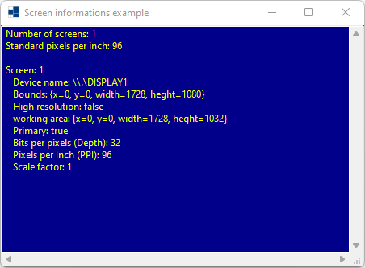
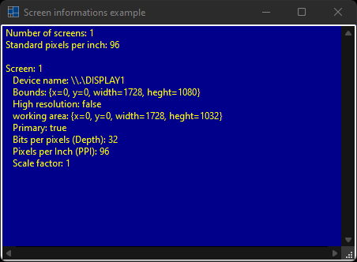
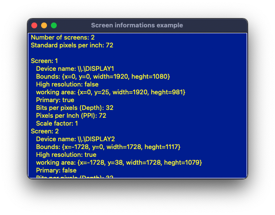
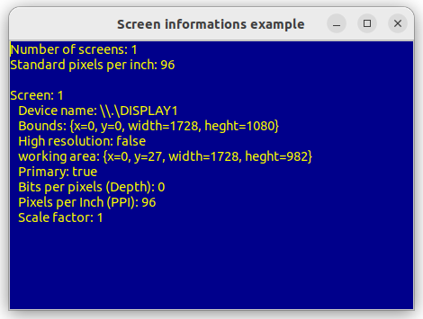

|
xtd
0.2.0
|
Loading...
Searching...
No Matches
screen_informations.cpp
shows how to get screen informations of xtd::forms::screen component.
- Windows
- 

- macOS


- Gnome
- 

#include <xtd/drawing/colors>
#include <xtd/forms/application>
#include <xtd/forms/form>
#include <xtd/forms/screen>
#include <xtd/forms/text_box>
using namespace xtd;
using namespace xtd::drawing;
using namespace xtd::forms;
public:
main_form() {
back_color(colors::dark_blue());
client_size({450, 300});
fore_color(colors::yellow());
text("Screen informations example");
screen_informations_text_box.dock(dock_style::fill);
screen_informations_text_box.multiline(true);
screen_informations_text_box.parent(*this);
screen_informations_text_box.read_only(true);
screen_informations_text_box.word_wrap(false);
screen_informations_text_box.append_text(ustring::format("Number of screens: {}{}", screen::all_screens().size(), environment::new_line()));
screen_informations_text_box.append_text(ustring::format("Standard pixels per inch: {}{}", screen::get_standard_pixels_per_inch(), environment::new_line()));
auto index = 1;
screen_informations_text_box.append_text(environment::new_line());
screen_informations_text_box.append_text(ustring::format("Screen: {}\n", index, environment::new_line()));
screen_informations_text_box.append_text(ustring::format(" Device name: {}{}", screen.device_name(), environment::new_line()));
screen_informations_text_box.append_text(ustring::format(" Bounds: {}{}", screen.bounds(), environment::new_line()));
screen_informations_text_box.append_text(ustring::format(" High resolution: {}{}", screen.high_resolution(), environment::new_line()));
screen_informations_text_box.append_text(ustring::format(" working area: {}{}", screen.working_area(), environment::new_line()));
screen_informations_text_box.append_text(ustring::format(" Primary: {}{}", screen.primary(), environment::new_line()));
screen_informations_text_box.append_text(ustring::format(" Bits per pixels (Depth): {}{}", screen.bits_per_pixel(), environment::new_line()));
screen_informations_text_box.append_text(ustring::format(" Pixels per Inch (PPI): {}{}", screen.pixels_per_inch(), environment::new_line()));
screen_informations_text_box.append_text(ustring::format(" Scale factor: {}{}", screen.scale_factor()));
++index;
}
}
private:
text_box screen_informations_text_box;
};
auto main()->int {
xtd::forms::application::run(main_form());
}
static void run()
Begins running a standard application message loop on the current thread, without a form.
Represents a window or dialog box that makes up an application's user interface.
Definition form.h:52
Represents a display device or multiple display devices on a single system.
Definition screen.h:30
const xtd::ustring & device_name() const
Gets the device name associated with a display.
bool high_resolution() const noexcept
Gets a value indicating whether a particular display is high resolution.
double scale_factor() const noexcept
Gets the scale factor of the display.
const drawing::rectangle & bounds() const noexcept
Gets the bounds of the display.
int32 bits_per_pixel() const noexcept
Gets the number of bits of memory, associated with one pixel of data.
int32 pixels_per_inch() const noexcept
Gets the number of pixels per inch of the display.
const drawing::rectangle & working_area() const noexcept
Gets the working area of the display. The working area is the desktop area of the display,...
bool primary() const noexcept
Gets a value indicating whether a particular display is the primary device.
The xtd::drawing namespace provides access to GDI+ basic graphics functionality. More advanced functi...
Definition actions_system_images.h:11
The xtd::forms namespace contains classes for creating Windows-based applications that take full adva...
Definition xtd_about_box.h:12
The xtd namespace contains all fundamental classes to access Hardware, Os, System,...
Definition xtd_about_box.h:10
Generated on Sun Mar 10 2024 19:25:44 for xtd by Gammasoft. All rights reserved.